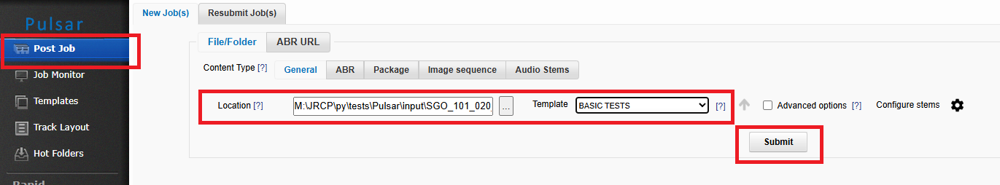
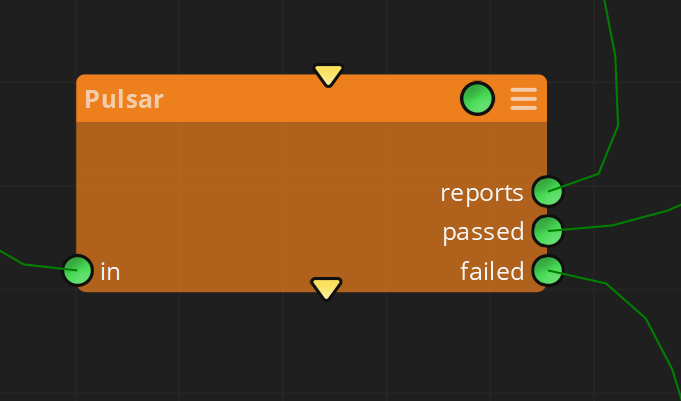
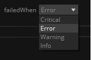
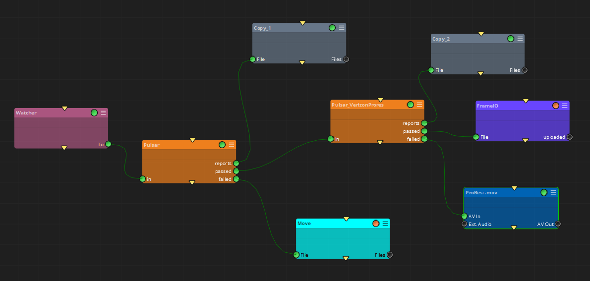
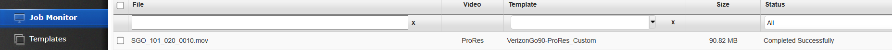
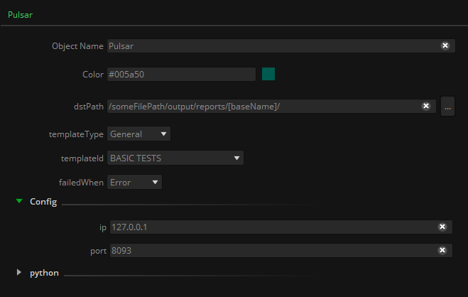

|
<< Click to Display Table of Contents >> Pulsar |
This node allows the automation of posting jobs to the QC tool Pulsar, from Veneratech, while applying the desired QC template available from the custom templates pulldown menu:

For every input file in Workflows’ Pulsar node output will be the corresponding qc report and, depending on the template’s conditions, the file is classified as ‘correct’ or ‘failed’:

In order to classify the input file, the kind of issue appearing on the QC report is used: it can be a Critical, Error, Warning, or just Info. If one of those appears, then the input file will be considered as correct or failed, and placed consequently in its corresponding output connector:

In this way, several Pulsar nodes can be concatenated so different QC templates are applied in each step, and depending on each QC result the user can make different decisions to be done for each input file:

At the same time, in Pulsar’s Job Monitor all files being processed will appear in real time, both in the ‘Active’ and ‘Processed’ sections:

Please note that this node will make use of your existing Pulsar’s license. All kind of Pulsar's license management must be done through Veneratech.
In: The input files to be analyzed with Pulsar’s QC template
report: The report files generated for each input file
passed: The input files that do not present any QC fail
failed: The input files that present any QC fail, based on the ‘failedWhen’ property selection.

dstPath: Output path where reports will be generated.
templateType: The kind of template to be applied (General, Adaptative Bitrate, or Smart).
templateId: Name of the template to be applied.
failedWhen: Pulldown menu to select the kind of issue in the report that will make an input file to be placed in the ‘correct’ or ‘failed’ connector.
Config